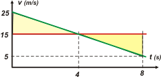

NO ME SALEN
PROBLEMAS RESUELTOS DE FÍSICA DEL CBC
(Movimiento uniformemente variado)
|
|

|
| |
|

|
9 - Un automovilista se da cuenta, al sobrepasar
a un motociclista, de que se trata de un amigo e
instantáneamente (se desprecia el tiempo de
reacción) aplica los frenos. Toda la información
está contenida en el gráfico v vs. t, en el que se
ha prendido el cronómetro en el instante en el
que el auto sobrepasa a la moto. |
a - Cuatro segundos después de que el coche
pasa a la moto, ¿quién va adelante?, ¿o van juntos?
Justifique la respuesta.
b - ¿Cuándo y dónde vuelven a encontrarse?
c - ¿Cuál es la velocidad del auto en ese momento?
d - Grafique x vs. t para ambos móviles.
e - ¿Podría hallar las soluciones a partir del
gráfico v vs. t? |
 |
|
|
|
Te propongo hacer este problema de forma diferente. No es que reniegue de mi súper método No me salen... es que quiero aprovechar este hermoso problema, en el que los datos son aportados por un gráfico, para acentuar la potencialidad de los gráficos y practicar su confección y análisis.
Acá los tenés, como siempre, encolumnados, y con una misma escala de tiempo. Verás que incluyen los resultados, pero podés ignorarlos... no son necesarios para hacer el análisis. Vas a ver que después llegaremos a ellos por caminos seguros y ciertos. |
|
|
Lo primero que hice para construir los gráficos fue transformar las velocidades para tener todo en unidades homogéneas.
v0A = 90 km/h = 25 m/s
vM = 54 km/h = 15 m/s
Rehice el gráfico de velocidad con los nuevos valores, y elegí un color para cada móvil. Verde el auto, rojo la moto.
De los gráficos que faltaban, el de aceleración es el más sencillo. Para la moto se trataba de una recta horizontal en el valor cero, ya que su aceleración vale constantemente cero. La moto está animada de un MRU. Para el auto, una recta horizontal debajo del eje, que representa una aceleración constante y negativa. El auto se mueve con un MRUV. |
 |
| | |
Ahora viene la parte más difícil: hacer los gráficos x vs. t. Para la moto no lo es tanto: una recta oblicua ascendente que representa una velocidad de avance constante, que parte de la posición cero en el instante cero. (La posición cero en ese instante fue una elección mía hecha sólo por comodidad; el enunciado me daba libertad de elección).
La gráfica del auto tenía que ser parabólica. Más aún, debía ser una parábola de concavidad negativa (triste, como le decimos de forma simpática). Que arrancara desde la misma posición en el mismo instante (dato del enunciado) y cuya inclinación inicial fuese mayor a la inclinación de la recta oblicua de la moto. (No olvides que la inclinación de la curva en una gráfica x vs. t representa la velocidad de forma tal que, cuanto más inclinada está la curva, mayor es la rapidez que representa).
Justamente por lo anterior traté de que en el instante t1 = 4 s la inclinación de la parábola fuese lo más parecida posible a la de la recta (el gráfico de velocidades me decía que en ese instante las velocidades eran iguales); al continuar la parábola era obvio que se cortaría nuevamente con la recta. Traté de ser lo más "simétrico" posible; después vas a ver que no me equivoqué.
Así hice los gráficos y te aseguro que están bien hechos. Pero lo interesante es que todas las preguntas que formula el enunciado se pueden contestar simplemente analizando estos mismos gráficos. Fijate:
a - Cuatro segundos después de que el coche
pasa a la moto, ¿quién va adelante?, ¿o van juntos?
Justifique la respuesta. |
|
|
 |
Los gráficos v vs. t gozan de una curiosa propiedad (sobre la cual me voy a explayar al final del problema), a saber: que el área encerrada bajo la curva (bajo la gráfica) en un intervalo cualquiera representa el desplazamiento del móvil en ese intervalo.
Eso hice: el área verde representa el desplazamiento del auto en esos 4 segundos. Se trata de un trapecio; si querés, lo calculamos como la suma de las áreas de un triángulo más un rectángulo: me da 80 m. (Fijate que hasta las unidades de esa área matemática se corresponden con la magnitud que representan). |
|
|
|
En el mismo gráfico, el área rosa representa el desplazamiento de la moto en el mismo intervalo. Me dio 60 m, y fueron esos dos valores los que volqué al gráfico de posición, allá arriba; fijate y volvé.
b - ¿Cuándo y dónde vuelven a encontrarse? |
|
|
|  |
En el mismo gráfico y con el mismo tipo de razonamiento pude encontrar la respuesta. El triangulito de arriba representa cuánto se desplazó de más el auto que la moto... desde que estaban juntos. Si la moto se desplazase una cantidad igual, ahora ella más que el auto... estarían de vuelta juntos. O sea, necesitaba un triangulito igual, pero hacia abajo. |
|
|
|
Así encontré simultáneamente dos respuestas: se volvían a encontrar a los 8 segundos (4 segundos más era lo que yo necesitaba), y...
c - ¿Cuál es la velocidad del auto en ese momento? Como los triangulitos eran iguales la altura debía valer 10 m/s, luego le resté eso a los 15 m/s de la moto y me dio 5 m/s, que es la respuesta correcta. Puse ese valor en el gráfico de velocidad, y además confirmé que el gráfico de posición estaba bien dibujado (la supuesta "simetría", ¿te acordás?), porque en ese instante la inclinación de la curva debe seguir siendo positiva, aunque ya bastante chatita.
Bueno, ahora te resuelvo el problema con mi método y por último volvemos a charlar sobre los gráficos. Vamos entonces a un esquema. |
|
|
 |
|
|
| Como tenemos los modelos a la vista, reemplazamos las constantes iniciales, con lo que las ecuaciones que describen los dos movimientos son éstas: |
|
|
| Moto |
x = 15 m/s . t |
|
| Auto posición |
x = 25 m/s . t + ½ a t² |
|
| Auto velocidad |
v = 25 m/s + a t |
|
|
|
Estas son las ecuaciones que describen TODO el movimiento. Hablan de las infinitas posiciones por las que pasan los móviles. |
| Ahora les pedimos a esas tres ecuaciones que hablen de los puntos que para nosotros tienen interés: el 1 y el e |
|
|
| Moto en t1 |
x1M = 15 m/s . 4 s |
[1] |
| Auto posición en t1 |
x1A = 25 m/s . 4 s + ½ a . 16 s² |
[2] |
| Auto velocidad en t1 |
15 m/s = 25 m/s + a . 4 s |
[3] |
| Moto en te |
xe = 15 m/s . te |
[4] |
| Auto posición en te |
xe = 25 m/s . te + ½ a te² |
[5] |
| Auto velocidad en te |
veA = 25 m/s + a te |
[6] |
|
|
Estas, en cambio, hablan solamente de las posiciones que a vos te interesan, ya sea porque ahí están las incógnitas o porque hay datos que no querés desperdiciar. |
Contamos: nos da 6 incógnitas, 6 ecuaciones... eso quiere decir que estamos listos para empezar el álgebra y despedirnos de la física.
de la [1] |
|
|
|
|
|
de la [3]
a = (15 m/s — 25 m/s) / 4 s
a = — 2,5 m/s²
con esto voy a [2] y me queda
x1A = 25 m/s . 4 s — 1,25 m/s² . 16 s2ç
|
|
|
|
|
|
Ahora igualo la [4] con la [5], con el valor de aceleración incluido.
15 m/s . te = 25 m/s . te + ½ a te²
0 = 10 m/s . te— 1,25 m/s² . te²
0 = te . (10 m/s — 1,25 m/s² . te)
el primer encuentro se produce cuando te = 0 (eso ya lo sabíamos) y el segundo cuando todo el paréntesis vale cero.
0 = 10 m/s — 1,25 m/s² . te
1,25 m/s² . te = 10 m/s
|
|
|
|
|
|
|
|
|
Meto esto en la [6] con el agregado de la aceleración
veA = 25 m/s — 2,5 m/s² te
|
|
|
|
|
|
Discusión: Como ves, a veces conocer la potencialidad de los gráficos (que no se agota en lo que te acabo de mostrar) resulta una herramienta de cálculo utilísima. Quien primero se dio cuenta de esta potencialidad y su papel en el cálculo fue Isaac Newton, el inventor del análisis matemático. Más adelante verás que la velocidad es la función derivada de la función posición, de modo que, yendo para atrás, la diferencia de posición (o sea el desplazamiento) se obtiene como la integral de la función velocidad.
En la nomenclatura actual:
ΔX = ∫ v dt
Newton descubrió que integrar era equivalente a realizar cálculos de áreas. Aplicado a nuestro caso de recién: en toda gráfica v vs. t el área encerrada bajo la curva representa el desplazamiento del móvil en el intervalo de tiempo encerrado.
Si llegaste hasta acá bien merecido tenés que esta vez no te desafíe. |
|
 |
| Algunos derechos reservados.
Se permite su reproducción citando la fuente, o sea, papurri. Última actualización set-06. Buenos Aires, Argentina. |
|
|
| |
| |
|